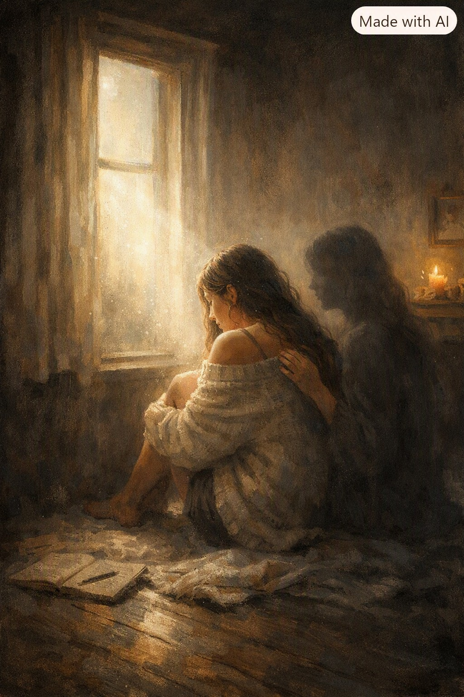

יש רגעים שבהם הבדידות אינה אויב, אלא מראה פנימית שמחזירה לנו את עצמנו. השיר הזה נכתב מתוך מקום כזה — מקום שבו השקט חושף את הלב, ואת האמת שלא העזנו לראות כשעוד היינו מוקפים אנשים.
יש רגעים
שבהם הבדידות אינה מראה
אלא דופק עמוק
הנשמע מתחת לכל המילים
שלא העזתי לומר.
היא נפתחת בתוכי
כמו חלון שלא ידעתי שקיים,
ומכניסה אור דק
שחושף את המקומות
שבהם הלב שלי
הסתתר מפני עצמו.
היא אינה שואלת דבר,
רק מציבה מולי
את השקט
שבו אני רואה
את כל מה שנשמט ממני
במרוץ אחר להיות בסדר.
לפעמים אני מתקרבת אליה
כמו מי שניגשת אל פצע ישן
שלא נרפא כי לא נגעו בו.
היא אינה נסוגה,
רק ממתינה
שאכיר בכך
שהאמת שאני מפחדת ממנה
היא שלי בלבד.
וכשאני לוחשת לה
שאני עייפה מלהיות לבד,
היא עונה בקול
שאינו קול
אלא יד עדינה על הלב:
אני לא באה לקחת ממך דבר.
אני באה להחזיר לך
את מה שאיבדת
כשניסית להיות חזקה מדי.